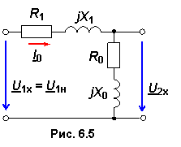
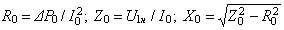

6.3.1. Опыт холостого хода
Параметры R1, X1, R2, X2, R0, X0 схемы замещения определяют из опытов холостого хода (ХХ) и короткого замыкания (КЗ) трансформатора, проводимых по стандартной методике с использованием трёх измерительных приборов: вольтметра, амперметра и измерителя разности фаз (или ваттметра, см. рис. 5.37).
При проведении опыта ХХ вторичная цепь разомкнута, а в первичной цепи, к которой подводится номинальное напряжение U1x = U1н, протекает ток ХХ I0 (рис. 6.5). Так как активное и реактивное сопротивления первичной обмотки: R1 << R0 и Х1 << Х0, то ими пренебрегают.
При проведении опыта ХХ вторичная цепь разомкнута, а в первичной цепи, к которой подводится номинальное напряжение U1x = U1н, протекает ток ХХ I0 (рис. 6.5). Так как активное и реактивное сопротивления первичной обмотки: R1 << R0 и Х1 << Х0, то ими пренебрегают.

Параметры R0 и Х0 намагничивающей ветви (ветви ХХ) трансформатора определяют по формулам:
Z0 = U1н/ I0; R0 = Z0cosφ0;
X0 = Z0sinφ0.
(6.10)
Если в первичную цепь включен ваттметр, то, пренебрегая потерями мощности в первичной обмотке R1I02, считают, что показание ваттметра равно потерям в стали ΔP0 ≈ ΔPcm, а значения сопротивлений элементов находят по формулам:
. (6.11)
Используя результаты измерений, рассчитывают коэффициент мощности cosφ0 трансформатора при ХХ и значение угла магнитного запаздывания δ:
cosφ0 ≈ ΔР0/U1нI0 —> φ0; δ ≈ 90° – φ0.